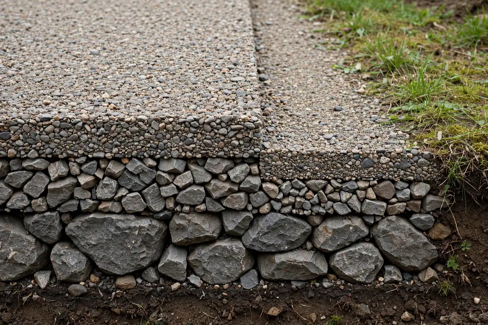
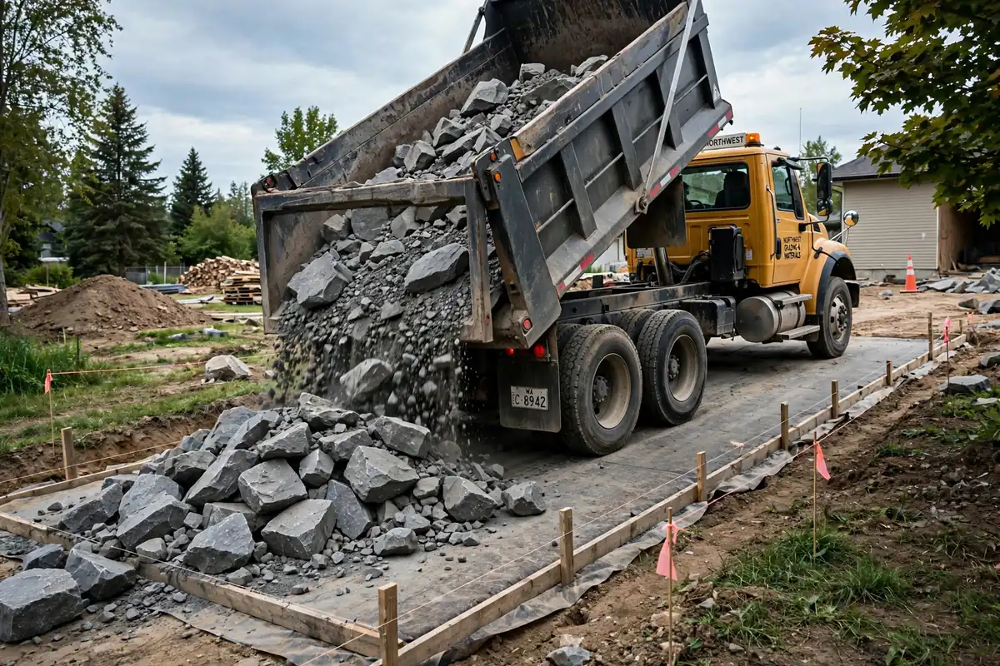

Quick answer: A new gravel driveway is not one layer of one material. For a 12×50 ft new build at the depths used here — 6 inches of base, 3 inches of bedding and 3 inches of top, 12 inches in total — you need 11.1 cubic yards of base, 5.6 cubic yards of bedding and 5.6 cubic yards of top: 22.2 cubic yards in all. At the mid-point densities stated below, that is about 18.1 tons of base, 8.3 tons of bedding and 8.3 tons of top — 34.7 tons before compaction. Add the 20% compaction allowance used for the new-build examples and the order becomes about 41.7 tons: 21.7 tons of base, 10.0 tons of bedding and 10.0 tons of top. A single-density calculator pricing the whole 22.2 yards at 1.4 tons per cubic yard, with no compaction, would say 31.1 tons — roughly a quarter less than you need to order.

Most calculators ask for length, width and one depth, multiply by one density — usually about 1.4 tons per cubic yard — and give one number. That is fine for a simple top-up, the approach in our guide to how many cubic yards of gravel for a driveway. A new build uses three stones, at three depths and weights per yard, each compacted before the next goes down. Ignore that and a 20–30% error is easy.
The three layers, and why each is a different stone
| Layer | Typical material | Job it does | Depth used here |
|---|---|---|---|
| Base | Large crushed stone / crusher run, such as #3 stone or crusher run | Carries the load, bridges soft ground, spreads vehicle weight over the soil | 6 in |
| Middle / bedding | #57 stone | Locks into the base, fills its voids, levels the surface for the top layer | 3 in |
| Top | #411 or a similar finer crushed stone | The driving surface: smaller stone that packs down and sheds water | 3 in |
This follows CalcWall's gravel calculator — one of the few that estimates layer by layer — as recorded in our research report of 26 November 2026. ProjectYards and other guides describe the same sequence, even where their calculators collapse it into one total.
Base. Large, angular stone locks together under compaction, and crusher run's fines fill the gaps, so a compacted base feels almost hard. Small stone alone would press into soft soil and disappear.
Bedding. Tipped onto coarse base, fine top stone falls into the voids and keeps sinking. #57 stone chokes those voids and levels the surface, without vanishing into the base.
Top. Finer crushed stone such as #411 packs tightly and stays put under tyres better than rounded pea gravel, which migrates and ruts, especially on a slope.
One material throughout fails at both ends: fine stone is a weak base; coarse stone is a surface that never packs.
The formula — one layer at a time
A cubic yard is 27 cubic feet, and inches become feet by dividing by 12, so the combined divisor is 27 × 12 = 324. Check it on the base of a 12×50 ft driveway at 6 inches: 12 × 50 × 6 ÷ 324 = 3,600 ÷ 324 = 11.11 cubic yards.
Then convert that layer only to tons, add compaction, and repeat for the other layers:
Densities: the layer's density, not one average
Stone does not all weigh the same: particle size, rock type and fines all change a yard's weight. The ranges below are from CalcWall and StarlightTools data cited in our research report of 26 November 2026 — ranges, because the real figure moves with quarry and load.
| Material | Density range (t/yd³) | Mid-point used in examples |
|---|---|---|
| Crusher run (base) | 1.45–1.80 | 1.625 |
| Crushed stone, general (bedding and top) | 1.30–1.70 | 1.50 |
| Pea gravel, for comparison | About 1.35 | — |
| River rock, for comparison | About 1.28 | — |
The familiar 1.4 t/yd³ sits near the bottom of the crusher-run range, so it understates the largest layer almost every time. The range also moves your order: the 12×50 ft base is 11.11 yd³ either way, but at 1.45 t/yd³ it is 16.1 tons and at 1.80 t/yd³, 20.0 tons — nearly 4 tons on one layer, before compaction. Treat the mid-point results below as the centre of a range; if your supplier gives an actual weight per yard, use that instead. See also tons vs cubic yards for gravel.
Compaction: the allowance most calculators skip
Loose stone takes up more space than compacted stone. Compact a layer and it settles thinner than you spread it. Order exactly the finished volume and you finish short.
The allowance recorded in our research report is 15–25% for a new build. The examples here use 20%, stated openly so you can re-run them at 15% or 25%. Soft or uneven ground argues for the top of the range; a firm, level bed for the bottom. A thin top-up needs less — the top-up example below uses 10% for waste and settling. Apply the allowance once per layer: if a supplier's quote already includes it, adding another 20% over-orders by about that amount.

Worked example 1: 12×50 ft new build
Single-car driveway, 12 × 50 ft, built new: base 6 in, bedding 3 in, top 3 in — 12 inches of construction, so roughly 12 inches of excavation once topsoil is stripped, within the 10–14 inch total a new build typically needs depending on soil. Area: 12 × 50 = 600 sq ft.
| Layer | Depth | Cubic yards (600 × depth ÷ 324) | Density (t/yd³) | Tons before compaction | Tons with +20% |
|---|---|---|---|---|---|
| Base — crusher run | 6 in | 11.1 yd³ | 1.625 | 18.1 t | 21.7 t |
| Bedding — #57 stone | 3 in | 5.6 yd³ | 1.50 | 8.3 t | 10.0 t |
| Top — #411 or similar | 3 in | 5.6 yd³ | 1.50 | 8.3 t | 10.0 t |
| Total | 12 in | 22.2 yd³ | — | 34.7 t | 41.7 t |
Layer by layer: base 600 × 6 ÷ 324 = 11.11 yd³; 11.11 × 1.625 = 18.06 t (printed 18.1); × 1.20 = 21.67 t (21.7). Bedding: 600 × 3 ÷ 324 = 5.56 yd³; × 1.50 = 8.33 t (8.3); × 1.20 = 10.0 t. Top: identical to bedding — 5.56 yd³, 8.33 t, 10.0 t. Totals from unrounded figures: 22.22 yd³; 34.72 t (34.7); 41.67 t (41.7).
Compare the shortcut: 22.22 yd³ × 1.4 = 31.1 t, no compaction — already 3.6 t light against the layered 34.7 t, and 10.6 t (about 25%) light against the 41.7 t to order. In practice the base eats the stone, and the top layer never arrives.
Sanity check, not a source: CalcWall's layer estimate for a slightly larger 12×60 ft driveway, recorded in our research report, is base 12–20 t + middle 9–12 t + top 6–10 t. Our 12×50 ft figures sit in a comparable band once area and our stated depths are allowed for. Do not average the two sets.
Worked example 2: 12×100 ft new build
Long single-car driveway, 12 × 100 ft, same 6/3/3-inch build. Doubling the length doubles every layer. Area: 1,200 sq ft.
| Layer | Depth | Cubic yards (1,200 × depth ÷ 324) | Density (t/yd³) | Tons before compaction | Tons with +20% |
|---|---|---|---|---|---|
| Base — crusher run | 6 in | 22.2 yd³ | 1.625 | 36.1 t | 43.3 t |
| Bedding — #57 stone | 3 in | 11.1 yd³ | 1.50 | 16.7 t | 20.0 t |
| Top — #411 or similar | 3 in | 11.1 yd³ | 1.50 | 16.7 t | 20.0 t |
| Total | 12 in | 44.4 yd³ | — | 69.4 t | 83.3 t |
Arithmetic: base 1,200 × 6 ÷ 324 = 22.22 yd³; × 1.625 = 36.11 t; × 1.20 = 43.33 t. Bedding and top are each 1,200 × 3 ÷ 324 = 11.11 yd³; × 1.50 = 16.67 t; × 1.20 = 20.0 t. Totals are from unrounded figures — 44.44 yd³, 69.44 t, 83.33 t with compaction — so adding the rounded table figures may differ by a tenth of a ton.
At this size, sequence deliveries — base, compact, bedding, top — rather than blocking the drive with 80-plus tons on day one.
Top-up mode: when you only need the top layer
If the base is sound — no deep ruts, no mud pumping through, no standing water — you are only replacing the displaced surface, and the method collapses to one layer.
Same 12×50 ft driveway, 3 inches of top stone only: 600 × 3 ÷ 324 = 5.56 yd³; × 1.50 = 8.33 t; with a 10% margin for waste and settling, 8.33 × 1.10 = 9.17, so about 9.2 tons to order. At 2 inches: 3.70 yd³, about 5.6 t, roughly 6.1 t with the same margin.
That job is covered in full in how many cubic yards of gravel for a driveway. Do not mix the modes. Not sure which you have? Dig one test hole at the edge: compacted stone underneath means top up; soil or mud means rebuild.
Ordering tips: suppliers quote tons, calculators speak yards
- Convert each layer before you phone. Arrive with three tonnage lines, not one yardage total. Both directions are in tons vs cubic yards for gravel.
- Name the material, not just the layer. Crusher run or #3 for base, #57 for bedding, #411 or equivalent for top.
- Ask for their weight per yard and re-run the formula with it.
- Order in build sequence. Base first; a mixed delivery cannot be un-mixed.
- Confirm whether compaction is in their number, so it is applied once.
- Keep a small surplus of top stone for potholes and edges.
Drainage stone is specified differently — see the French drain gravel guide. For a slab or footing alongside, see concrete bags vs ready-mix; gravel habits do not carry over.
Common mistakes
- One material for all layers — fine stone is a weak base; coarse stone is a surface that never packs.
- One density for all layers — it understates the base, the thickest layer, on every build.
- Forgetting compaction — ordering the exact finished volume guarantees a thinner finished driveway. Add 15–25% once per layer on a new build; 20% in the examples here.
- Ordering to the inch with no waste margin — subgrades are not flat and stone spills; one spot's depth is not the average.
- Excavating to surface depth, not build depth — a 12-inch build needs about 12 inches of excavation, or the drive sits proud and sheds its top layer.
- Compacting only the top — each layer is compacted before the next goes down; a loose base ruts forever.
Ready to work your own size? Run each layer separately in the gravel calculator, convert each to tons at its own density, add compaction once, and take those three tonnage lines — not a single total — to the supplier.
Figures in this article are planning estimates based on the formula, density ranges and sources stated above, checked November 2026. They are not engineering design: ground conditions, drainage and local practice can change the right depths and materials for a specific driveway, and a local builder or supplier who knows your soil should confirm the build before you order.
Frequently Asked Questions
For 12×50 ft at 6/3/3 in: 11.1 yd³ base, 5.6 yd³ bedding, 5.6 yd³ top — 22.2 yd³, 34.7 t, 41.7 t to order with 20% compaction. At 12×100 ft every figure doubles: 44.4 yd³, 83.3 t to order.
The base is heavier than that average and is the thickest layer: at 1.4 throughout, 12×50 ft is 31.1 t against 34.7 t layered, before compaction. The single figure suits a top-up, not a build.
15–25% on a new build; 20% here. Top of the range on soft ground, bottom on a firm bed, once per layer.
6 in base, 3 in bedding, 3 in top here — 12 in total, within the roughly 10–14 in a new build typically needs. Softer ground takes a thicker base, not a thicker top.
Yes, if the base is sound: a 3-inch top-up on 12×50 ft is 5.6 yd³, about 9.2 t with a 10% margin. Test hole first — stone means top up; soil or mud means rebuild.